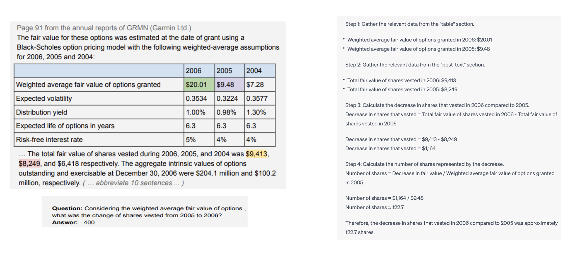
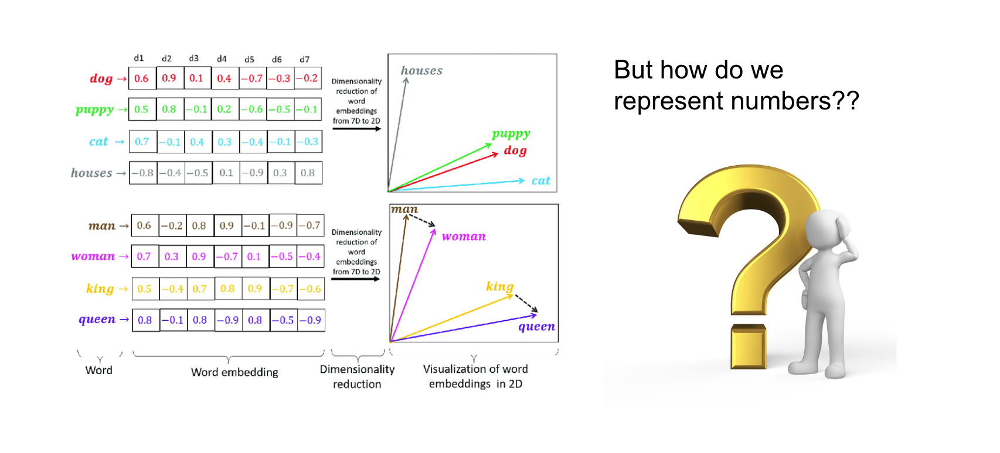
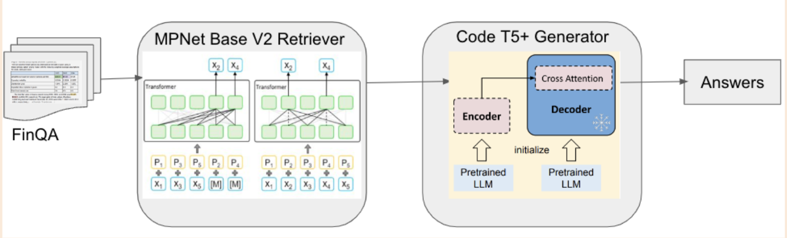
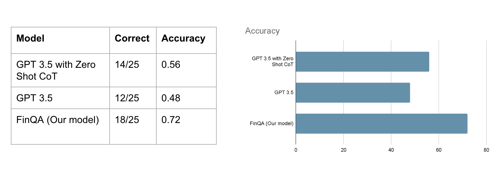
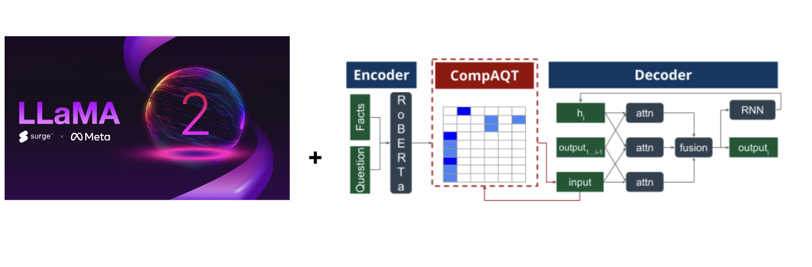

There has been considerable excitement within the community surrounding large language models and their potential achievements. Chat-GPT has now become the standard, and the release of GPT-4 for public use marks a pinnacle of innovation in the field of Natural Language Processing (NLP). Nevertheless, we are faced with two significant questions that require careful attention:
-
Can open-source models like llama have comparables results to that of OpenAI?
-
Is few-shot prompting a viable solution for enhancing the capabilities of llms?
As intelligence continues to advance, there arises a necessity to establish more robust benchmarks. One such benchmark designed to assess the financial reasoning capabilities of large language models (LLMs) is FinQA. A typical FinQA example looks as follows: It consists a corpus with textual and tabular information, a question to be fed to the model and a quantitative answer to be derived through a series of operations

So here is the results of zero-shot chain-of-thought prompting on gpt 3.5. While the model successfully extracts details from the text, it struggles to comprehend the underlying language well enough to execute operations in the correct sequence. This was particularly evident in its inability to grasp the concept of weighted average in this instance. Additionally, the model fails to capture the details outlined in the table due to the extensive length of the texts.
Problem Statement

So what exactly is the problem here, why is financial data harder than normal text? Unlike regular textual data composed of paragraphs, financial data presents added complexity, primarily comprising numerical information and involving computations based on tabular content. A recent study reveals that current word embeddings treat numbers as ordinary words, resulting in models capturing a rough sense of magnitude but failing to precisely grasp their numerical significance. Therefore, we need to design an intricate architecture that would help capture the context better
Solution

The dataset comprises 8281 QA pairs that involve tabular reasoning. The corpus along with the question is fed into the retriever as input. Each row of the table is then transformed into text to help the model treat it similar to any other textual content. The retriever then extracts the top n (in our case, 5) most relevant sentences for a given question. These retrieved details are subsequently input to the generator, which creates a program in Domain-Specific Language (DSL) to solve the problem. After evaluating the DSL, a mathematical entity is produced as the output. This architecture enables operations such as addition, subtraction, division, multiplication, maximum, minimum, and average.
Retriever: My initial experiments began with using llama 1. I started finetuning the smallest 7B param model and went on upto 30B param model. However, the pipeline didnt perform better than the FinQA baseline. Then I searched for a model that has been finetuned for retrieval and chose mpnet base. The uniqueness of this model is the MpNet embedding that solves the problem of both MLM and PermutedLM. It introduces dependency among predicted tokens, distinguishing it from the MLM used in BERT. On the other hand, To overcome position discrepancy, it incorporates auxiliary position information as input, allowing the model to perceive an entire sentence, in contrast to XLNet's use of PLM.
Here are the finetuned results for the retriever. Comparing to the Gold index results, two out of the three sentences retrieved by the model were sufficient in answering the question at hand. This gives us an overall accuracy of 89.73% for top 3 results and 93.5% for top 5 results
- Top 3: 89.73130022110768
- Top 5: 93.51251145985002
- Example:
the 2015 net revenue of amount ( in millions ) is $ 5829
net revenue utility following is an analysis of the change in net revenue comparing 2015 to 2014
the 2014 net revenue of amount ( in millions ) is $ 5735
Generator: Having received the outputs from the retriever, we encode them using a pretrained encoder, in our case, CodeT5+ along with embeddings for special tokens from the DSL. We then pass these on to a custom LSTM decoder which at each time step generates a part of the program and updates the memory to include the evaluation of the previous step until a complete program is generated.
With respect to the results, we have two metrics - program accuracy and execution accuracy. Execution accuracy is more lenient and allows for different programs that might reach the same answer by chance or an alternative form of the program whereas program accuracy checks for whether the generated program is identical to the target. Having trained 2 models, one on the results of the retriever and another on the gold retrievals we see that in both cases we beat the general crowd performance. However, we are far from expert performance - a result of knowledge gained from being in the field for years, clearly warranting further research. An alternative approach we are currently testing is using CodeT5+ as a complete text-to-text generator which hopefully takes advantage of the model’s code generation and understanding capabilities.
- With retriever results
Program Accuracy (correct program): 58.77%
Execution Accuracy (correct answer): 61.61%
- With gold retrievals
Program Accuracy (correct program): 69.52%
Execution Accuracy (correct answer): 70.34%

Now comparing the results with gpt-3.5. We chose a sample of 25 sentences that were representative of the corpus and here were our observations. GPT 3.5 without chain-of-thought prompting gives us 48%. With COT i.e asking the model specifically to think step by step upon giving wrong answer, the model achieves 56%. And finally our model FinQA achieves 72%. This signifies the need to build a complex architecture that understands the domain better than prompting
Discussion and Future Work
Here are a few interesting observations that we've made.
-
Most of the successful operations involves computing the average, net change growth rate, balance, due, percentage change, net revenue
-
Changing the word from portion to percentage gives us better results. This shows that the model is aware of commonly used words but does fail to recognise the synonyms of these words that are rarely used.
-
Payment due vs payment due cash have different answers. Our experiments suggested that using cash confuses the model reducing its retrieval accuracy. This is mostly because in financial texts, the use of word cash is restrictive and the mode of payment usually doesnt have an impact
-
Model still falls short when it comes to domain specific terms that are rarely explained even in financial corpus. These are words like debt commons, capital expenditure that are learnt by finance professionals with experience.

That leaves us an ample of room for improvement. While our experiments with llama 1 didnt improve much on the baseline, we would want to finetune llama 2 that was very recently released. In addition to that, a paper on Improving compositional generalization for multi-step quantitative reasoning in question answering by Armineh Nourbakhsh, Cathy Jiao, Sameena Shah under prof. Rose has introduced a novel addition to the generator architecture that adjusts the attention weights of the model to capture the alignment of input to that of the output. We believe combining these two architectures will help us achieve significant improvements over our baseline.
References
-
Chen, Zhiyu, et al. "Finqa: A dataset of numerical reasoning over financial data." arXiv preprint arXiv:2109.00122 (2021)
-
Song, Kaitao, et al. "Mpnet: Masked and permuted pre-training for language understanding." Advances in Neural Information Processing Systems 33 (2020): 16857-16867.
-
Armineh Nourbakhsh, Cathy Jiao, Sameena Shah, and Carolyn Rosé (2022). Improving compositional generalization for multi-step quantitative reasoning in question answering. In Proceedings of the 2022 Conference on Empirical Methods in Natural Language Processing, pages 1916–1932, Abu Dhabi, United Arab Emirates. Association for Computational Linguistics.
-
https://www.surgehq.ai/blog/surge-ai-and-meta-1m-human-rlhf-annotations-for-llama-2
-
https://medium.com/@hari4om/word-embedding-d816f643140